phononAna
The phononAna class simulates phonon dynamics on a 1D sample structure.
Copyright (c) 2013, Daniel Schick, André Bojahr, Marc Herzog, Roman Shayduk, Clemens von Korff Schmising All rights reserved.
License: BSD (use/copy/change/redistribute on own risk, mention the authors)
Contents
Classdef
Each phononAna instance and all inherited class objects are inherted from the phonon class which follows handle semantics. Hence a copy of such object will not copy the object itself, but only a handle to that object.
classdef phononAna < phonon
Properties
properties (SetAccess=public,GetAccess=public)
end%properties
Methods
methods
Constructor
Is executed each time an instance of this class is created. Only the structure input is obligatory.
function obj = phononAna(structure,varargin) obj = obj@phonon(structure,varargin{:}); end%function
Display
This method is called to display informations of the instance.
function disp(obj) disp('Analytical phonon simulation properties:'); % call the parent display method disp@phonon(obj); end%function
getStrainMap
Returns a strainMap for the sample structure. If no strainMap is saved it is caluclated.
function [strainMap X V A B sticksSubSystems] = getStrainMap(obj,time,tempMap,deltaTempMap) % create a unique hash hash = obj.getHash(time,tempMap,deltaTempMap); % create the file name to look for filename = fullfile(obj.cacheDir, ['strainMapAna_' hash '.mat']); if exist(filename,'file') && ~obj.forceRecalc % file exists so load it load(filename); obj.dispMessage(['_strainMap_ loaded from file ' filename]); else % file does not exist so calculate and save [strainMap X V A B sticksSubSystems] = obj.calcStrainMap(time,tempMap,deltaTempMap); save(filename, 'strainMap', 'X', 'V', 'A', 'B', 'sticksSubSystems'); obj.dispMessage(['_strainMap_ saved to file ' filename]); end%if end%function
calcStrainMap
Calculates the strainMap of the sample structure for a given tempMap and deltaTempMap and time vector. Further details are given in Ref. [1]. Within the linear chain of 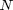 masses ( ) at position 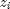 coupled with spring constants
) at position 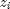 coupled with spring constants  one can formulate the differential equation of motion as follow:
one can formulate the differential equation of motion as follow:
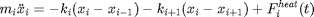
Since we only consider nearest-neighbor interaction one can write:
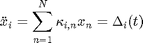
Here 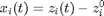 is the shift of each unit cell, 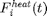 is the external force (thermal stress) of each unit cell and 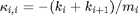, and 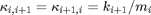.
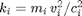 is the spring constant and 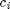 and 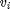 are the lattice 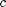-axis and longitudinal sound velocity of each unit cell respectively. One can rewrite the homogeneous differential equation in matrix form to obtain the general solution
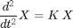
Here 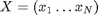 and 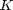 is the tri-diagonal matrix of 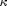 which is real and symmetric. The differential equation can be solved with the ansatz:
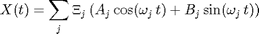
where 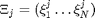 are the eigenvectors of the matrix . Thus by solving the Eigenproblem for one gets the eigenvecotrs 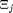 and the eigenfrequencies  . From the initial conditions
. From the initial conditions
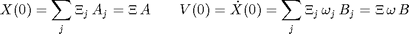
one can determine the real coefficient vecots 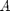 and 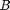 in order to calculate 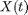 and 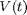 using the ansatz:
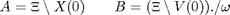
The external force is implemented as spacer sticks which are inserted into the springs and hence the unit cells have a new equillibrium positions 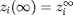. Thus we can do a coordination transformation:
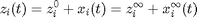
and
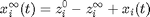
with the initial condition  the becomes
the becomes
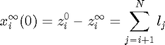
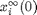 is the new initial condition after the excitation where 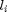 is the length of the i-th spacer stick. The spacer sticks are calculated from the temperature change and the linear thermal expansion coefficients. The actual strain 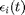 of each unit cell is calculates as follows:
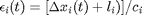
with 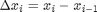. The stick have to be added here, because 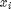 has been transformed into the new coordinate system 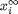.
function [strainMap X V A B sticksSubSystems] = calcStrainMap(obj,time,tempMap,deltaTempMap) tic % initialize N = obj.S.getNumberOfUnitCells; % nb of unit cells M = length(time); % nb of time steps time0 = time(1); % initial time cAxises = obj.S.getUnitCellPropertyVector('cAxis'); X = zeros(M,N); % shifts of the unitCells V = zeros(M,N); % velocities of the unitCells A = zeros(M,N); % coefficient vector for eigenwert solution B = zeros(M,N); % coefficient vector for eigenwert solution strainMap = zeros(M,N); % the restulting strain pattern of the unitCells % check tempMaps [tempMap, deltaTempMap] = obj.checkTempMaps(tempMap,deltaTempMap,time); % calculate the sticks due to heat expansion first for all time % steps obj.dispMessage('Calculating linear thermal expansion ...'); [sticks, sticksSubSystems] = obj.calcSticksFromTempMap(tempMap,deltaTempMap); if obj.onlyheat % no coherent dynamics so calculate the strain directly strainMap = sticks./repmat(cAxises',size(sticks,1),1); else % solve the eigenproblem for the structure to obtains the % eigenvectors Xi and eigenfreqeuencies omega for the N % coupled differential equations [Xi, omega] = obj.solveEigenproblem(); % calculate the actual strain pattern with the solution of the % eigenproblem and the external force (sticks, thermal stress) obj.dispMessage('Calculating _strainMap_ ...'); obj.progressBar('Please wait... '); % traverse time for i=1:M obj.progressBar(i/M*100); % plot the progress dt = time(i)-time0; % this is the time step % calculate the current shift X and velocity V of all % unitCells using the ansatz X(i,:) = Xi*( A(i,:)'.*cos(omega*dt) + B(i,:)'.*sin(omega*dt)); V(i,:) = Xi*(omega.*(-A(i,:)'.*sin(omega*dt) + B(i,:)'.*cos(omega*dt))); % remember the velocities and shifts as ic for the next % time step X0 = X(i,:)'; V0 = V(i,:)'; % the strain can only be calculated for N-1 unitCells, so % we neglect the last one if i > 1 strainMap(i,1:N-1) = (diff(X(i,:),1,2)+sticks(i-1,1:N-1))./cAxises(1:N-1)'; else % initial sticks are zero strainMap(i,1:N-1) = diff(X(i,:),1,2)./cAxises(1:N-1)'; end%if % calculate everything for the next step if i < M % check, if there is a next step if find(deltaTempMap(i,:)) % there is a temperature change time0 = time(i); % set new initial time % determining the shifts due to inserted sticks % as new ininital conditions if i > 1 temp = flipud(cumsum(flipud(sticks(i,:)'-sticks(i-1,:)'))); else % initial sticks are zero temp = flipud(cumsum(flipud(sticks(i,:)'))); end%if X0 = X0 + vertcat(temp(2:end),0); % determining the cofficient vectors A and B of % the general solution of X(t) using the inital % conditions X0 and V0 A(i+1,:) = ( Xi\X0); B(i+1,:) = ((Xi\V0)./omega)'; else % no temperature change, so keep the current As, % Bs, and sticks A(i+1,:) = A(i,:); B(i+1,:) = B(i,:); end%if end%if end%for obj.progressBar(''); end obj.dispMessage('Elapsed time for _strainMap_:',toc); end%function
solveEigenproblem
Creates the real and symmetric matrix (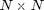) of spring constants and masses and calculates the eigenvectors and eigenfrequencies for the matrix which are used to calculate the strainMap of the structure. If the result has been save to file, load it from there.
function [Xi,omega] = solveEigenproblem(obj) % create the file name to look for filename = fullfile(obj.cacheDir, ['eigenValues_' obj.S.getHash('phonon') '.mat']); if exist(filename,'file') && ~obj.forceRecalc % file exists so load it load(filename); obj.dispMessage(['_eigenValues_ loaded from file ' filename]); else % no file - so lets calculate everything tic obj.dispMessage('Calculating _eigenValues_ ...'); % initialize N = obj.S.getNumberOfUnitCells; % nb of unit cells K = zeros(N,N); %Initializing three-diagonal springs-masses matrix. omega = zeros(N,1); %Initializing a vector for eigenfrequencies masses = obj.S.getUnitCellPropertyVector('mass'); % get masses vector springConsts = obj.S.getUnitCellPropertyVector('springConst'); % get the first order springs vector springConsts = vertcat(0, springConsts(:,1)); % set the first spring free for i=1:N %Defining main diagonal. K(i,i)=-(springConsts(i)+springConsts(i+1))/masses(i); end%for for i=2:N %Defining the two other diagonals. Nearest neightbour interaction. K(i,i-1) = springConsts(i)/masses(i); K(i-1,i) = springConsts(i)/masses(i-1); end%for % Determining the eigenvectors and the eigenvalues [Xi,lambda] = eig(K); for i=1:N % calculate the eigenfrequencies from the eigenvalues omega(i)=sqrt(-lambda(i,i)); end%for obj.dispMessage('Elapsed time for _eigenValues_:',toc); % save the result to file save(filename,'Xi', 'omega'); obj.dispMessage(['_eigenValues_ saved to file ' filename]); end%if end%function
getEnergyPerEigenmode
Returns the energy per Eigenmode of the coherent phonons of the 1D sample sorted and unsorted.
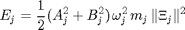
Frequencies are in [Hz] and energy per mode in [J].
function [omegaSort ESort omega E] = getEnergyPerEigenmode(obj,A,B) % initialize N = obj.S.getNumberOfUnitCells; % nb of unit cells M = size(A,1); % nb of time steps E = zeros(M,N); ESort = zeros(M,N); masses = obj.S.getUnitCellPropertyVector('mass'); % mass vector of unitCells % get the eigenVectors and eigenFrequencies [Xi,omega] = obj.solveEigenproblem(); % sort the frequencies and remeber the permutation of indicies [omegaSort sortIndex] = sort(omega); % traverse time for i=1:M % calculate the energy for the jth mode E(i,:) = 0.5 * (A(i,:)'.^2 + B(i,:)'.^2).* omega(:).^2.*masses(:) .* sum(Xi.^2,1)'; % sort the energies according to the frequencies ESort(i,:) = E(i,sortIndex); end%for end%function
end%methods
end%classdef
References
- M. Herzog, D. Schick, P. Gaal, R. Shayduk, C. von Korff Schmising & M. Bargheer (2011). Analysis of ultrafast X-ray diffraction data in a linear-chain model of the lattice dynamics. Applied Physics A, 106(3), 489–499. doi:10.1007/s00339-011-6719-z